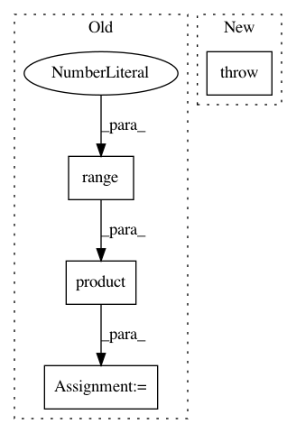

ca25da7c55ba436ab557410d5f2e2e9b557d2840,pgmpy/models/MarkovModel.py,MarkovModel,to_junction_tree,#MarkovModel#,412
Before Change
clique_trees = JunctionTree(nx.minimum_spanning_tree(complete_graph).edges())
factor = self.factors[0]
factor = factor.product(*[self.factors[i] for i in
range(1, len(self.factors))])
if set(factor.scope()) != set(self.nodes()):
ValueError("Factor for all the random variables not specified")
all_vars = set(self.nodes())
for node in clique_trees.nodes():
marginalised_nodes = all_vars - set(node)
factor_copy = factor.marginalize(list(marginalised_nodes),
inplace=False)
clique_trees.add_factors(factor_copy)
return clique_trees
After Change
clique_trees.add_factors(clique_potential)
if not all(is_used.values()):
raise ValueError("All the factors were not used to create Junction Tree."
"Extra factors are defined.")
return clique_trees
def markov_blanket(self, node):
In pattern: SUPERPATTERN
Frequency: 3
Non-data size: 4
Instances
Project Name: pgmpy/pgmpy
Commit Name: ca25da7c55ba436ab557410d5f2e2e9b557d2840
Time: 2015-03-02
Author: abinash.panda.ece10@itbhu.ac.in
File Name: pgmpy/models/MarkovModel.py
Class Name: MarkovModel
Method Name: to_junction_tree
Project Name: facebookresearch/ParlAI
Commit Name: 780e9097e3394c0b1b6b3c7f2864fa4250d8fa96
Time: 2017-09-05
Author: Jackurbs@gmail.com
File Name: parlai/mturk/tasks/model_evaluator/run.py
Class Name:
Method Name: main
Project Name: facebookresearch/ParlAI
Commit Name: 780e9097e3394c0b1b6b3c7f2864fa4250d8fa96
Time: 2017-09-05
Author: Jackurbs@gmail.com
File Name: parlai/mturk/tasks/multi_agent_dialog/run.py
Class Name:
Method Name: main